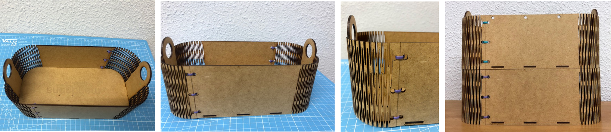

EXPERIMENTING WITH LASER CUT
The task of the week is to develop something parametric and cut in the lasercut, also experiment with vinil cutter machines.
A BOX WITH BLENDING PARTS USING MDF
DRAWING IN AUTOCAD
It is important to say that before cut all the pieces, test the bending part to see if it is actually working, even more so if it is not a trade pattern. Have in mind the scale of the holes to bend. What I did was follow and online recommendation of bending, if your thickness material is 2.5mm, use the same distance as the axis of the guide it worked,but take care how bending do you want the piece what to be and play around with that measurement.
This boxes are going to be used for the first intervention, they can storage one above the other.

PARAMETRIC FOREARM
MODELING THE SHAPE IN GRASSHOPPER
The file had too many errors, which are kind of common in grasshopper and I preferred to bake it and continue in rhino.
SOME ERRORS FROM GRASSHOPPER TO MANUALLY CORRECT
I was not sure about errors from grasshopper in general, but this situation change the idea of parametric, because you have to pick the error and change it, and when you change the main parameters this error is not anymore the error, it is other instead.
PIECES WITH COUNTOUR COMMAND
I wanted that the bottom layer has less thickness than the upper part to avoid noticing it at the end, but it didn't work.
GENERATE THE HOLES TO ENSEMBLE PROPERLY
The file had too many errors, which are kind of common in grasshopper and I preferred to bake it and continue in rhino.
PREPARING TO CUT
I export the file to AUTOCAD because it is faster to me to distribute them on the sheet to cut.
FINAL RESULT
At the end, two pieces were missed, and the overlapping area was small to attach properly. As a wearable it didn´t work, it is too unconfortable to have it next to the skin.
Apart from that, the parametrically generated shape was not notorious when it was sliced. As I thought at the beginning.